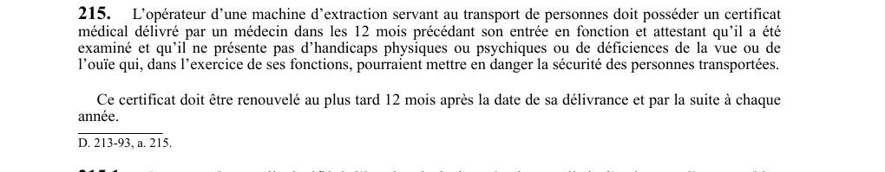

art-215-RSSM : certificat médical opérateur machine extraction
Personne ne conduit une machine d'extraction qui transporte des personnes sans une attestation médicale récente, et cette attestation se périme.
- Délai d'obtention : certificat délivré par un médecin dans les 12 mois précédant l'entrée en fonction.
- Contenu attesté : l'examen a eu lieu et l'opérateur ne présente ni handicap physique ou psychique, ni déficience de la vue ou de l'ouïe.
- Critère retenu : seules comptent les atteintes qui, dans l'exercice des fonctions, pourraient mettre en danger la sécurité des personnes transportées.
- Premier renouvellement : au plus tard 12 mois après la date de délivrance.
- Par la suite : renouvellement chaque année.
- Visé : employeur, opérateur · Nature : obligation
🌐 LegisQuébec · 📄 PDF officiel
Texte officiel
L’opérateur d’une machine d’extraction servant au transport de personnes doit posséder un certificat médical délivré par un médecin dans les 12 mois précédant son entrée en fonction et attestant qu’il a été examiné et qu’il ne présente pas d’handicaps physiques ou psychiques ou de déficiences de la vue ou de l’ouïe qui, dans l’exercice de ses fonctions, pourraient mettre en danger la sécurité des personnes transportées.
Ce certificat doit être renouvelé au plus tard 12 mois après la date de sa délivrance et par la suite à chaque année.
Texte de l’article 215 RSSM, extrait de la couche texte du PDF officiel (page 66), sans OCR ni retouche. La capture ci-dessous et le PDF font foi.
{kind=link}

Toucher l'image pour l'agrandir🔗 Voir art. 215 RSSM dans le PDF (page 66)
Version : texte officiel du RSSM (RLRQ c. S-2.1, r. 14), à jour au 1er mai 2024 : Éditeur officiel du Québec
Voir aussi
- art. 213 : fréquences télécommandes exploitations contiguës · obligation : sauf pour la télécommande numérique avec encodage unique, chaque employeur dont les exploitations minières sont contiguës doit choisir une fréquence distincte afin qu'une télécommande ne puisse actionner un équipement de l'exploitation voisine ; les instructions.
- art. 214 : registre et entretien système télécommande · obligation : tout renseignement sur un système de télécommande (marque, modèle, numéro de série, fréquence, numéros de scellés, responsable, résultats d'entretien) doit être noté dans le registre du poste de travail ; les ajustements.
- art. 216 : plans ingénieur machine extraction installation · interdiction : aucune machine d'extraction ne peut être installée sans plans et devis préalables d'un ingénieur précisant la charge totale suspendue, le déséquilibre maximal, la charge maximale par tambour et le nombre maximal de couches de câble.
- art. 217 : tension circuit électrique sécurité extraction · interdiction : le circuit électrique de sécurité d'une machine d'extraction ne doit pas être alimenté par une tension de plus de 120 V.
- ⚖️ Loi habilitante : LSST
- ↑ Index du bloc : Engins miniers
Pages qui pointent ici (6)
- art-213-RSSM : fréquences télécommandes exploitations contiguës Recueil législatif
- art-214-RSSM : registre et entretien système télécommande Recueil législatif
- art-216-RSSM : plans et devis avant installation Recueil législatif
- art-217-RSSM : tension circuit électrique sécurité extraction Recueil législatif
- art-54-RSSM : installation motorisée de transport de personnes Recueil législatif
- RSSM : Engins miniers (art. 201 à 250) Recueil législatif